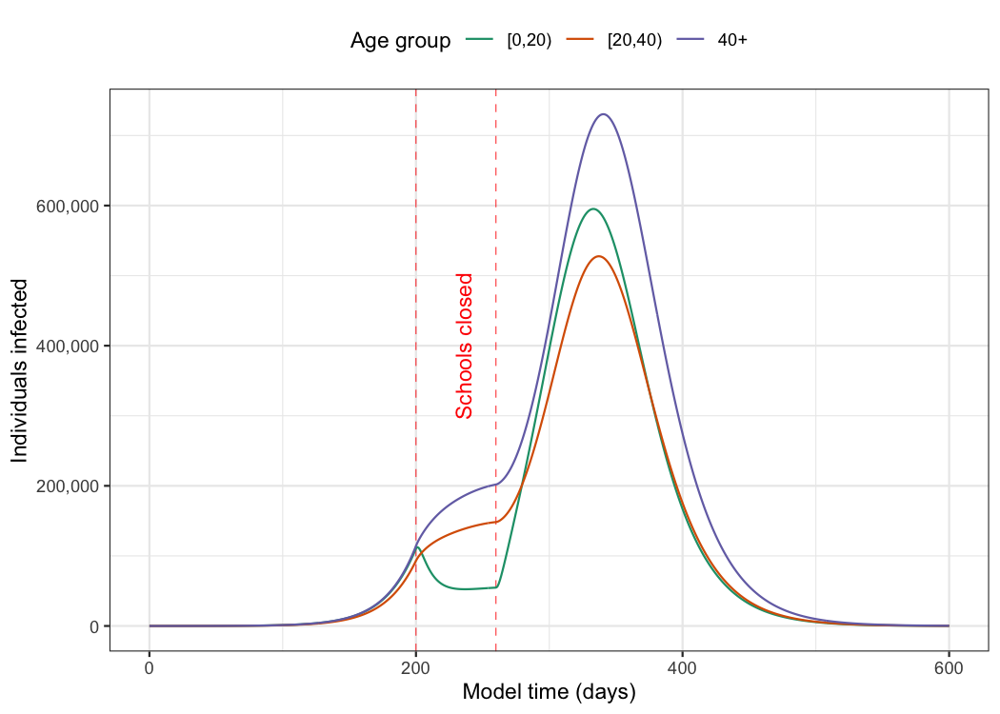

epidemics is an R package that provides a convenient interface to a library of compartmental models that can help to model epidemic scenarios for directly transmitted respiratory infections such as influenza or Covid-19 as well haemorrhagic fevers such as Ebola virus disease. The models in epidemics implement methods outlined in Bjørnstad et al. (2020a) and Bjørnstad et al. (2020b). The models in epidemics can help provide rough estimates of the course of epidemics, and the effectiveness of pharmaceutical and non-pharmaceutical interventions.
epidemics currently provides three models:
A deterministic SEIR-V model with susceptible, exposed, infectious, recovered, and vaccinated compartments (SEIR-V), allowing for heterogeneity in social contacts, the implementation of a group-specific non-pharmaceutical intervention that reduces social contacts, and a vaccination regime with group-specific start and end dates,
The deterministic Vacamole model developed at RIVM, the Dutch Public Health Institute for the Covid-19 pandemic, with a focus on scenario modelling for hospitalisation and vaccination (Ainslie et al. 2022),
A stochastic, discrete-time, compartmental SEIR model suitable for modelling haemorrhagic fevers such as Ebola Virus Disease, including hospitalisation and hospital and funeral transmissions, adapted from Li et al. (2019) and Getz and Dougherty (2018).
More models are planned to be added in the near future. Please get in touch if you would like to see your model added to the epidemics model library — we are happy to help with translating it into our framework, with a special focus on making the model applicable to LMIC settings.
epidemics relies on Eigen via {RcppEigen}, and on Boost Odeint via {BH}, and is developed at the Centre for the Mathematical Modelling of Infectious Diseases at the London School of Hygiene and Tropical Medicine as part of the Epiverse-TRACE initiative.
Installation
The current development version of epidemics can be installed from GitHub using the pak package.
if(!require("pak")) install.packages("pak")
pak::pak("epiverse-trace/epidemics")Installation Notes
Some users who are also using or developing packages that use Stan might face issues if they have modified their toolchain to accommodate packages such as cmdstanr; see this resolved issue for a starting point if you face similar problems.
Users on Windows systems will need to have packages from the RTools family installed and on their system path; see this link for guidance on using RTools for your version of R.
Quick start
Here we show an example of using the default model in epidemics to model an epidemic in the U.K. population with an R0 similar to that of pandemic influenza, with heterogeneity in social contacts among different age groups, and with the implementation of school closures to dampen the spread of the infection.
Prepare the social contact pattern for a population (here, the U.K population), divided into three age groups: 0 – 19, 20 – 39, and 40+.
# load contact and population data from socialmixr::polymod
polymod <- socialmixr::polymod
contact_data <- socialmixr::contact_matrix(
polymod,
countries = "United Kingdom",
age.limits = c(0, 20, 40),
symmetric = TRUE
)
# prepare contact matrix
contact_matrix <- t(contact_data$matrix)
# prepare the demography vector
demography_vector <- contact_data$demography$population
names(demography_vector) <- rownames(contact_matrix)Prepare the initial conditions for the population by age group — here, one in every million individuals is infected at the start of the epidemic (for a total of about 60 infections).
# initial conditions: one in every 1 million is infected
initial_i <- 1e-6
initial_conditions <- c(
S = 1 - initial_i, E = 0, I = initial_i, R = 0, V = 0
)
# build for all age groups
initial_conditions <- rbind(
initial_conditions,
initial_conditions,
initial_conditions
)
rownames(initial_conditions) <- rownames(contact_matrix)Prepare an object of the class <population>, using the function population().
# prepare the population to model as affected by the epidemic
uk_population <- population(
name = "UK",
contact_matrix = contact_matrix,
demography_vector = demography_vector,
initial_conditions = initial_conditions
)Prepare an <infection> class object to store the parameters of the infection which is causing the epidemic which is being modelled.
# simulate a pandemic, with an R0,
# an infectious period, and an pre-infectious period
pandemic_influenza <- infection(
r0 = 1.5,
preinfectious_period = 3,
infectious_period = 7
)
pandemic_influenza
#> <infection>
#> infection name: NA
#> R0: 1.5
#> Infectious period: 7
#> Other infection parameters:
#> "preinfectious_period"Define an intervention to close schools for two months. This intervention mostly only affects individuals in the age range 0 – 19, and reduces their contacts by 50%, reducing the contacts of other age groups by 1%. This is an object of the class <contacts_intervention>, created using the function intervention(), while setting type = "contacts".
# an intervention to close schools
close_schools <- intervention(
type = "contacts",
time_begin = 200,
time_end = 260,
reduction = matrix(c(0.5, 0.01, 0.01))
)
# view the intervention
close_schools
#> <contacts_intervention>
#> Intervention name: NA
#>
#> Time begin:
#> [1] 200
#>
#> Time end:
#> [1] 260
#>
#> Reduction:
#> Interv. 1
#> Demo. grp. 1 0.50
#> Demo. grp. 2 0.01
#> Demo. grp. 3 0.01Run the default epidemic model, using the function epidemic(). We assume an R0 of 1.5 which is similar to pandemic influenza, an infectious period of 7 days, and a pre-infectious period of 3 days.
# run an epidemic model using `epidemic()`
output <- model_default_cpp(
population = uk_population,
infection = pandemic_influenza,
intervention = list(contacts = close_schools),
time_end = 600, increment = 1.0
)Visualise the development of individuals in the “infectious” compartment over model time. Note that these curves represent the number of individuals that are infectious, and not the number of newly infectious individuals.

Package vignettes
More details on how to use epidemics can be found in the online documentation as package vignettes, under “Articles”.
Help
To report a bug please open an issue.
Contribute
Contributions to epidemics are welcomed. Please follow the package contributing guide.
Code of conduct
Please note that the epidemics project is released with a Contributor Code of Conduct. By contributing to this project, you agree to abide by its terms.